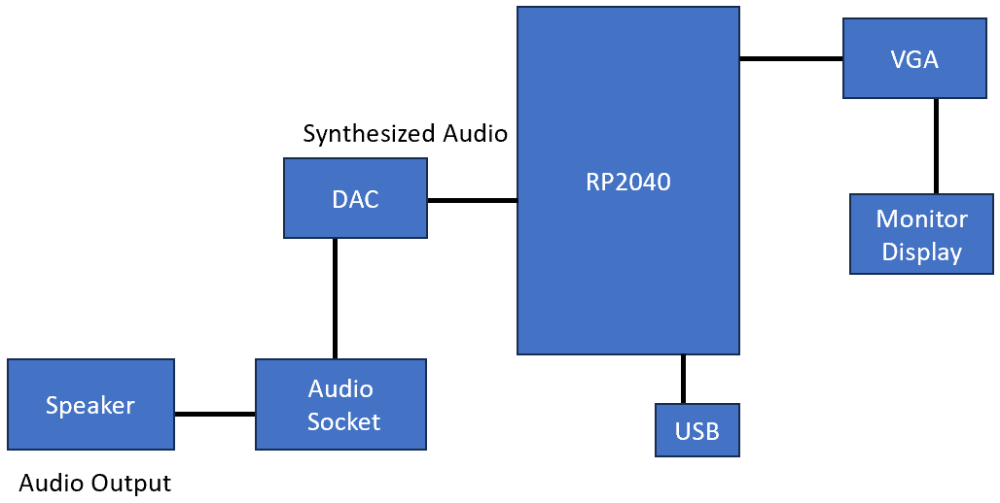
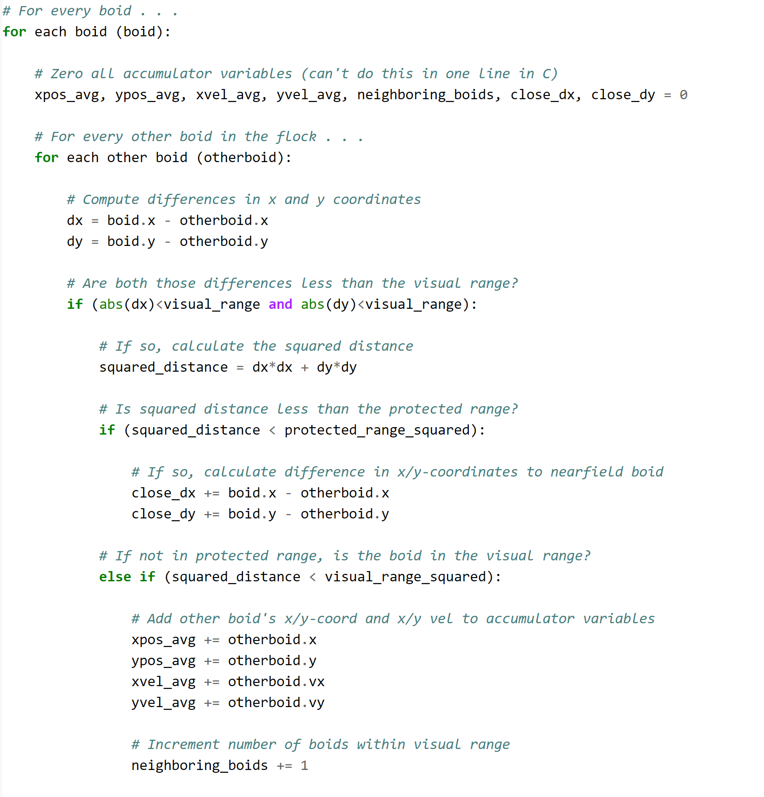
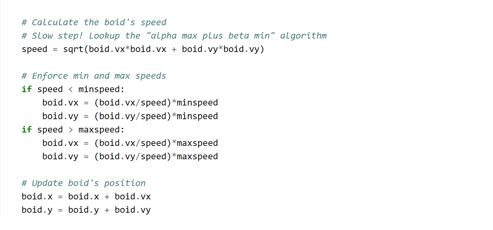
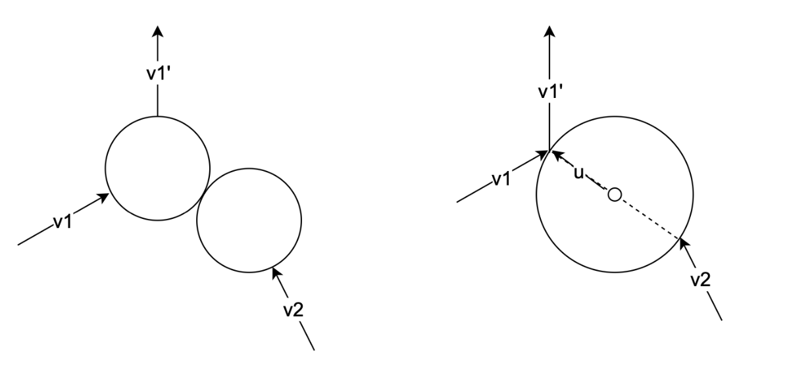
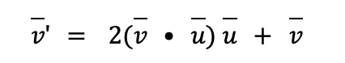
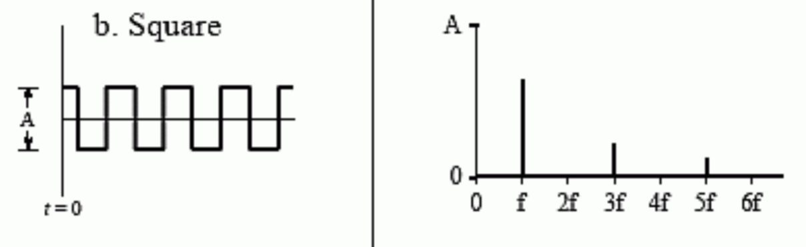
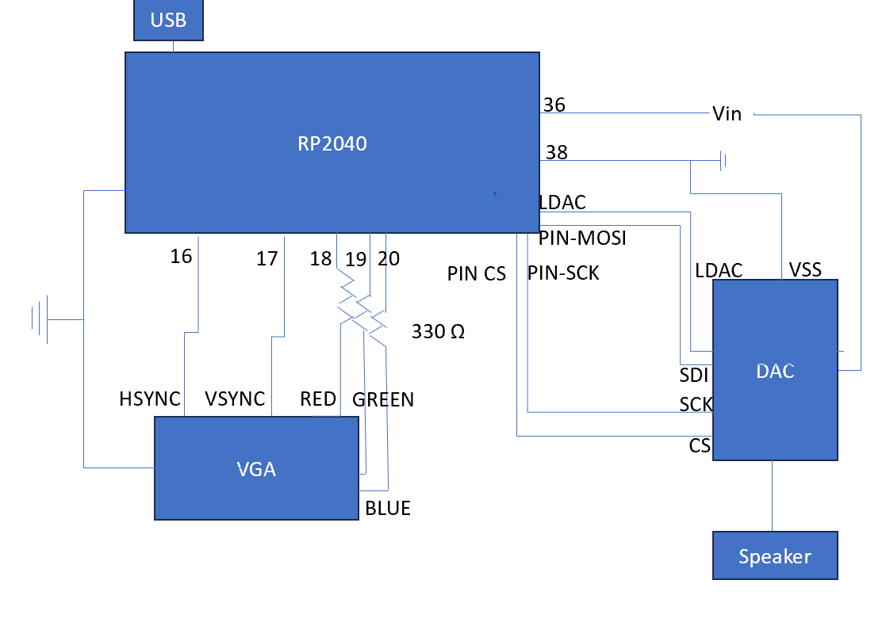
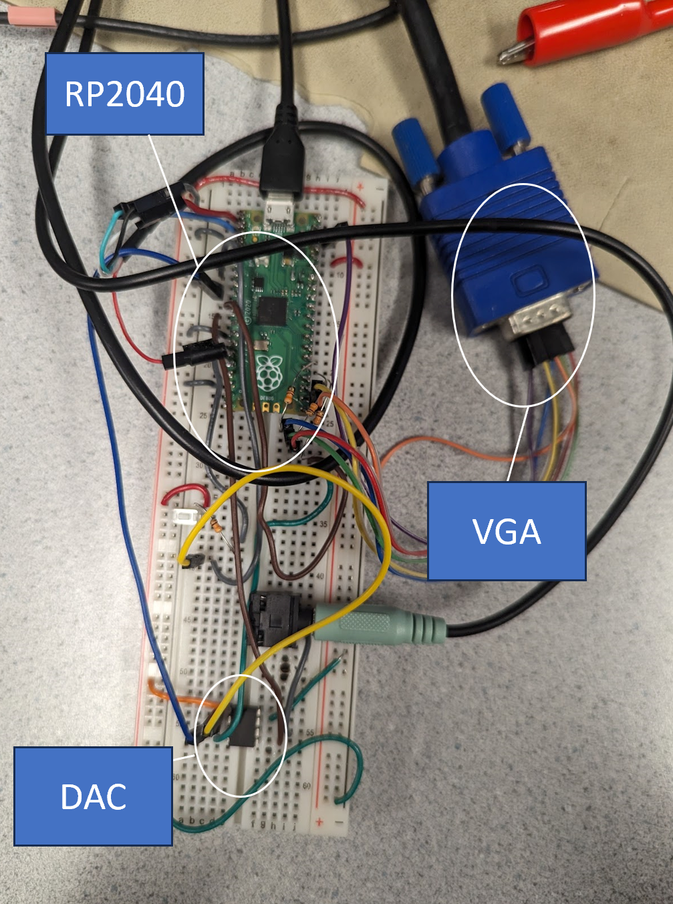

ECE 5730: Kinetic Molecular Theory with Particles on a RP2040
Chih-Yu Arthur Chang (cc2535) and Miriya Pinkerman (mp2235)
Demonstration Video
Objective
The purpose of this lab is to use the RP2040, DAC, and VGA to create a kinetic molecular theory physics simulation.
Introduction
The boids lab earlier this semester inspired us to understand other natural phenomena, so naturally we began to research different physics theorems. Due to the nature of the boids lab, we realized we could create an ideal gas law simulation that followed kinetic molecular theory. In order to verify the simulation was working as physics would expect, we implemented a representation of Boyle's law and displayed the kinetic energy average of the particles.
High Level Design
Boids Algorithm Background
Using different portions of the boids pseudocode from the 4760/5730 Boids Algorithm page we were able to implement particle like behavior. Below are segments of the code that we found useful when simulating our particle movement.
 Within our code the main focus was on the boid algorithm's use of visual range, speed limit, and updating of position.
Ideal Gas Law Background
Our particle model is based on the five postulates of kinetic molecular theory: (1) Gas particles move linearly unless a the particle collides with another particle or a wall (2) volume between particles is negligible because the free space between them is large (3) the particles collisions are elastic, so no kinetic energy is lost during collisions (4) there is no forces of attraction and repulsion between particles (5) the particles' average kinetic energy is proportional to temperature. Thus, for a group of particles average kinetic energy should remain constant in the model which gives us that KEavg= 0.5*m*vrms^2, where vrms is the root mean square velocity and m is the mass of the particle. Furthermore, using KEavg based on temperature we could directly relate our temperature to the particles' velocities such that vrms = sqrt(3RT/m). These postulates provide us with the ideal gas law PV = nRT, where P is pressure, V is volume, n is number of moles of a particle, R is the universal gas constant, and T is the temperature.
In relation to collision in our model, initially ran the program assuming the collisions would result in the particles just moving at the velocity of those reaching it, but the downfall of this method was not every collision was based on the particles' centers of mass. Based on this relationship a collision method had to be put in place. Using this new method and increasing visual range slightly we were able to create a more accurate collision model for the particles that kept our initial particle velocities consistent to what we expected.
Another component of ideal gas law we implemented in our simulation was Boyle's law. According to Boyle's law pressure and volume are inversely related and thus P is proportional to 1/V. In order to make sure that our program was acting in this manner we assumed temperature would be a constant that the user could change from Putty. Through the implementation of calculating Boyle's law at different temperatures, we had a theoretical check for our simulation's pressure vs. volume relationship.
An unexpected outcome of changing the temperature in this manner provided us with different isothermal graphs as derived in thermodynamics. Since the temperature was constant, change in temperature was zero and pressure vs. volume graph acted as one would expect isothermal graphs to act at different temperatures. In isothermal graphs as the temperature is increased energy within the system is increased, such a phenomenon was seen in our simulation as temperature was increased it had a direct impact on the kinetic energy average in our model.
Collision
In our collision simulation, we have the assumption that all particles have the same mass and the same velocity. Therefore, the collision model can be largely simplified. However, we cannot oversimplify the model. In our first model, we assumed that each particle has an infinite small volume and force field, so when two particles collide, we simply swap their moving direction. This made no difference between the non-colliding model. Therefore, we introduced the second model: We assumed each particle had a specific volume. To implement this concept, we can translate it to: we perform collision of these two particles if their distance is within twice their radius.
The left picture shows the collision of two particles with the conservation of momentum. We can convert it to the right one for better understanding. Because the particle mass and the velocities are the same, we only need to consider the direction after the collision. Thus, the surface of the right picture circle serves as a mirror. Therefore, the collision can be modeled as follows:
Where vector u is the normalized vector that points from the center of the circle to reflecting point and 2(v u) u serves as the speed difference that v needs to change which is perpendicular to the surface of the circle. This equation can simulate the mirror reflection without too much computation cost and implementation complexity.
Hardware/Software Tradeoffs
There is no trade-off between hardware and software. They provide different functionalities in this project. Hardware provides DAC, Putty connections, and VGA output while software provides the simulation algorithm, system control and hardware resource manipulations. They cannot replace each other in any manner.
Program/Hardware Design
Our main objective was to adapt the boids code such that the particles collided like gas particles. From there we adapted the code so the user could input different amounts for the volume and see the different results of pressure (hitting rate per second) versus time. After getting a working model of the constant volume, we modified it by integrating a synthesized beep. When the beep was working correctly, we adjusted the code to beep every time a particle hit the wall of its volume. Once we had developed a constant volume, we made a simulation to develop pressure versus volume graphs at varying temperatures (chosen by the user). To verify that our pressure versus volume graph was behaving as expected, we plotted Boyle's law. Finally, we added a constant pressure graph so the user could see how kinetic energy would need to decrease if volume decreased at a constant pressure for varying temperatures. To verify that this was working correctly we found what the pressure should be based on the chosen temperature and plotted the result.
RP2040 Program Design
Our software architecture and computational power distribution
- Core1 (main computation)
- Particle simulation
- Core2 (miscellaneous)
- Particle simulation
- Pressure calculation
- Graph plotting
- Serial input output
Our design principle is an incremental design. We complete each functionality by gradually adding features on it and making sure it works within our expectation every time. This is one of the most efficient ways to build up a complex system and we can narrow down the place that is most likely to produce bugs. Every time a feature is created, we would set up several hand-crafted unit tests to ensure the basic functionality. The methodology helps a lot even when the project scale grows up. More specifically and practically, we made the program highly modularized, in which we separated each functionality into several functions and made sure each function will not be too long to read or debug. Moreover, we try to keep everything as function calls instead of macro because the function can make a good isolation for variable names and take the advantage of C's type checking. There should be little or no drawback with modern compiler architecture. Functions can be inlined and therefore can have the same performance with macro which puts the program at risk by modifying the program in compile time.
Main Functions Explanation
Move_particles()
All particles are stored in global variables and therefore can be accessed by every function, but this slightly decreases the safety of the program. For each two particles, if they are both in each other's visual range, then a collision happens. The collision is explained in the physics section. The drawing part is relatively simple: for each frame, the previous positions will be erased, the position will be updated, and the new position will be printed (if the position is inside the bound). This is the core computation in our project. If we do not perform the collision the time complexity of this function will be O(N), while our version of collision algorithm complexity is O(N^2) which is much higher and became the bottleneck. of the whole simulation. However, collisions are essential because we need to increase the 'chaos' of our system.
When the volume was changed, the moving wall generated a wavefront which made the measurement fluctuate and gave an imprecise measurement of collisions especially when the kinetic energy was at a lower state. Therefore, we still need collisions to increase the entropy even though, logically, the pressure will be measured the same in a long-term experiment. According to the experimental result, the collision actually helps a lot. The wave-like moving particles will be eliminated in a short time (in 3-4 wave period) and quickly make the measured pressure converge to the ideal line. This is obvious when the volume is adjusted in a short period of time.
Beeping Sound Generator
The sound is generated by Direct Digital Synthesis Algorithm (DDS). The target sine wave will be incrementally generated with the timer interrupt callback. When a particle hits the wall, a swoop sound will be generated once. While the original sound is synthesized every 25 us, we change the frequency of it to 75 but change the increment of the sin phase three times larger. This can produce the sound with lower computation consumption. The reason we adjust it to three times lower is because if we keep the same as 25 us, the other functionality will become lagging which means it took too much CPU time to do the sound generation. The lowering seems to have no problem producing the same result. However, we cannot ignore the noise sound produced by the square wave coming from DDS.
For a perfect square wave, the first harmonic noise comes from 3f. We can treat the procedure of DDS as the perfect sine wave combining with a square wave with the frequency of timer callback. Theoretically, the absolute threshold of hearing of humans is from 20 to 20000 hz. The synthesis period should be higher than 50us. When we adjust it to 75, we can start to hear some unexpected noises, but we treated it as an acceptable trade-off.
Low Pass Filter for Graph Plotting
We output the current measured pressure every frame. However, if the volume change is too large, the measured pressure will be several unwanted high frequency peaks. Therefore, we implemented a software low pass filter that can average the most recent five plotting points. The data structure we use is a queue which is the most suitable one to use in this scenario. Every time we only need to insert and pop one value and calculate the average.
Synchronization Problems
In our program design, two cores mainly perform different functionalities, so we do not need the explicit synchronization between the two cores. However, there is one situation that we need to solve by waiting on one core. While core0 did the particle plotting, core1 will move the volume line and erase particles outside the bound. In the experiment, sometimes particles outside the bound will not be erased. We debugged for a long time and found that the erasing was slightly earlier than the particle drawing. Some particles will remain unerased permanently. Eventually, we solved this problem by adding PT_YIELD_usec(5000) before the erasing to make sure the erasing was an 'atomic-like' function that will not be interrupted or switched.
Trick Parts
One of the most difficult parts in this project is to deal with PT_thread library and timer interrupt. In most of the software designs, we did not need to tackle the low level or even the hardware in this way. The operating system took care of most of the hardware-related problems, and we only needed to focus on the algorithm itself. The bare metal design provided us more freedom with its aggressive development of software applications. We could control the timer ourselves and did not need to consider the performance consumed by other processes: we had full control of the hardware. The tradeoff is that we did not have services provided by modern operating systems such as memory protections and multitasking which made it much harder when memory leaking happened.
Hardware Design
Our hardware was minimal as we wanted to mainly focus on giving the user multiple options when dealing with the simulation. Therefore, our main hardware components consisted of the RP2040, the DAC, and the VGA Plug (See the appendix c for a labeled circuit image.). Using what we had learned from Lab 1 on the Birdsong Synthesis we utilized the DAC to output signals through our audio socket and speaker. Initially we intended to use an HDMI port to display the simulation, but due to our focus on making our simulation as accurate as we could we decided to work significantly more on coding the simulation.
A future change that could be made to this simulation is adjusting the way user input works. By including a keypad to enter in numerical values of temperature and volumes we could adjust the user interface.
Results
Our particle's movement, generated digital direct synthesis beeping, and putty interface had to be split between two cores to ensure the simulated movement did not noticeably lag. Due to the amount of things working on the cores we were limited by the number of particles that we could utilize. This led to the early testing and accuracy checks we used in the simulation below.
Early Tests
One of our greatest challenges during this project was learning how collision worked for the particles and determining the best way to implement this collision. At the beginning of our test, when we created our simulation of constant volume, we had not set up our collision algorithm. This resulted in an interesting wave-like side effect when the volume was restored to the initial size; the waves would travel towards the wall at the same right from left to right and would not adjust to the increased volume (Fig. 3). The wavefront would collide with the wall and would continue this movement for every volume.
From here we tried different collision methods until we had developed a collision model that worked as expected. The first method we tried was a collision method based on bi-particle collisions. Before evaluating this new collision method, we increased the size of the particle. Unexpectedly a vibrating behavior began to occur. This behavior led to the particles clustering into the corners of the simulation's boundaries and leaving the boundary (Fig.4).
Due to the issues we were encountering with collisions, we moved to make our pressure vs. volume graph and after developing that graph moved back to the collision. By having the pressure vs. volume graph taking in data from our simulation we were able to see a data representation and we were able to see the wavefront issue graphically. This graphic allowed us to develop a different collision algorithm and then implemented a small visual range to ensure collisions (like in the boids lab) which allowed the simulation to return to the expected ideal gas behavior.
Accuracy
In this lab one way to measure accuracy was on our pressure vs. volume simulation. For each temperature that pressure and volume were plotted we also had a line printed for Boyle's law. When the pressure was equivalent at a specific volume the simulation line would overlap with the line plotted for Boyle's law. It is important to note that because we scaled the y axis to fit most points, our y axis was scaled differently than our volume axis. In turn we determined the best coefficient n that would best fit the plot (Fig. 5). After making this change, we had to slightly shift the Boyle's law equation based on the temperature we had entered. Once this change was made the plots aligned more closely (Fig. 6).
We also measured the simulation's accuracy while we maintained a constant pressure. Unlike our pressure vs. volume graph, the energy of the particles decreased in speed such that pressure was constant. Using this method, we plotted our simulation on a pressure vs. volume graph while simultaneously plotting the expected pressure. When graphing this we initially encountered a similar scaling concern (Fig. 7), but after working with coefficients we were able to find a more accurate linear pressure for our baseline.
Conclusion
Overall, we accomplished most things we wanted to in our model. We wanted to create a physics simulation that allowed for user input and utilized a display. In our original design we had intended to add an HDMI component, but as we began to work more in depth with the different graphs and user inputs, we ultimately used VGA as it allowed us to focus more on relationships like constant pressure and constant volume.
In the future it would be helpful to improve the number of particles that could be present in the simulation. Earlier in this project we attempted to implement the Alpha Max Beta Minimum Algorithm, but this resulted in an inaccurate Boyle's law curve. By utilizing things like a spinlock on certain commands, we could avoid using Protothread yield, potentially impacting the frame rate per second of the system. From here we could use the frame rate per second like we did in the boids lab to ensure that the particles were being animated during the proper time.
Another improvement that could be made is changing the y axis scaling to a log scale, from here we could compare linear plots of pressure vs. volume with a slope of -1. In this case it may be easier to determine the accuracy of the pressure vs. volume graph.
RP2040 Program Design
In terms of program design, we could possibly increase the performance through further optimization. Some places use floating point computation. If the value range is carefully managed, all calculations can be safely converted to fix15 point numbers and therefore increases the performance. With longer spare time, it is possible to either increase the frames per second (FPS) or more particles in simulation. Increasing FPS is more important in this project. With higher FPS, the particle movement can be more fine-grained and thus can eliminate the unideal situation when the volume becomes lower. The collision algorithm can be optimized to O(N) instead of O(N^2). The implementation could be much more complex, such that some data structure like binary tree would be needed to describe the 2-D plane. With higher computational efficiency, we can add more particles to simulate the situation with higher pressure.
Moreover, our particle model can be used for computational fluid dynamics. For example, we can put a wing inside our model and calculate the sum of hitting force to determine the lifting force. In this case, viscosity between particles and the wing can also be implemented.
Intellectual Property Considerations
The RP2040 code for this project was based in the protothreads library. By splitting the synthesis of the beeping sound, tracking of our particles, and the putty user interface into two cores, we were able to implement our code in a "round robin" setup. As a basis for our particle algorithm, we used the 5730 lab two animation.c and adapted it such that we could utilize methods and integrate the ideas from beep.c into our main code. Using these example codes, and the addition of our own methods and calculations, we were able to create our physics simulation.
Ethical Considerations
We created this simulation as a learning tool for students to gain greater understanding of ideal gas law and kinetic molecular theory. Due to this interest in aiding student conceptual understanding we wanted to make our simulation accessible to a wider range of people. The first adjustment we made was based on red-green colorblindness. In order for the simulation to be more easily viewed, we avoided using red and green outside of a small number of particles within the simulation and plotted our graphs utilizing blue, yellow, and magenta. Another component added to our simulation was a beeping sound that occurred when particles hit the boundary of the simulation volume. The ability to hear the changes in pressure based on volume makes the simulation more accessible to those with visual impairments.
Safety Considerations
There were no major safety concerns in this lab, as the user was interacting only with the computer and the monitor. Although if a younger child, ages 6 to 10, is running the simulation, they should not use the simulation for more than 1.5 hours as recommended by the American Academy of Pediatrics and World Health Organization.
Legal Considerations
No major legal considerations needed to be made in this lab.
Work Distribution
We collaborated on the c code of this project. When beginning the project Arthur set up the initial file changes, while Miriya worked on the DDS circuit hardware components. Upon testing that beep.c worked as it had in lab 1, we began to integrate components of the beep code with portions of the boids algorithm.
Later while working on this collision model both conducted separate research and ultimately Arthur's model for the collision calculations was chosen and Arthur coded this model. Miriya began to develop an incremental volume method that was later edited by both Arthur and Miriya to serve as the basis for our pressure vs. volume graph.
Furthermore, to assess our model both Arthur and Miriya made changes to finalize and test the program at different stages. When plotting Boyle's law and different user inputs images and values were recorded to determine constants as well as track our changes made. During these recordings we were able to distinguish whether our optimizations had any visual effects as was mentioned when using the Alpha Max Beta Minimum Algorithm.
Appendix
Appendix A: Permissions
The group approves this report for inclusion on the course website.
The group approves the video for inclusion on the course YouTube channel.
Appendix B: Commented Code
Appendix C: Hardware Schematic
In the figure above, VGA PLUG wires correspond to the RGB colors. The red wire goes to the red port, the blue wire goes to the blue port, and the green wire goes to the green port. Furthermore, the HSYNC is connected to the RP2040 by an orange wire, and the yellow wire connects the RP2040 to the VSYNC.
Bill of Materials
| Component | Source | Quantity | Unit Price |
|---|---|---|---|
| RP2040 | Lab | 1 | $7.50 |
| DAC | Lab | 1 | $2.11 |
| VGA Driver Cable | Lab | 1 | $5.49 |
| 3.55 mm Audio Socket | Lab | 1 | $1.07 |
| Total Cost | $0 |
References
1. An educational consulting network. Kecia Ray Kecia Ray is a globally recognized leader in education and a transformation coach. She leads K20Connect, "Here's what the research says about screen time and school-aged kids," Technology Solutions That Drive Education, https://edtechmagazine.com/k12/article/2023/01/heres-what-research-says-about-screen-time-and-school-aged-kids#:~:text=The%20organizations%20also%20note%20that,and%20learning%20beyond%20our%20screens (accessed Dec. 0, 2023).
2. Libretexts, "10.5: Kinetic molecular theory of gases," Chemistry LibreTexts, https://chem.libretexts.org/Courses/University_of_Arkansas_Little_Rock/Chem_1402%3A_General_Chemistry_1_(Belford)/Text/10%3A_Gases/10.5%3A__Kinetic_Molecular_Theory_of_Gases (accessed Oct. 22, 2023).
3. S. Kahn, "PV diagrams - part 2: Isothermal, isometric, adiabatic processes (video)," Khan Academy, https://www.khanacademy.org/science/ap-physics-2/ap-thermodynamics/ap-laws-of-thermodynamics/v/pv-diagrams-part-2-isothermal-isometric-adiabatic-processes (accessed Dec. 9, 2023).
4. “What is the slope of logp vs logv graph at constant temperature?,” byju, https://byjus.com/question-answer/what-is-the-slope-of-logp-vs-logv-graph-at-constant-temperature/ (accessed Dec. 14, 2023).